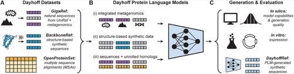
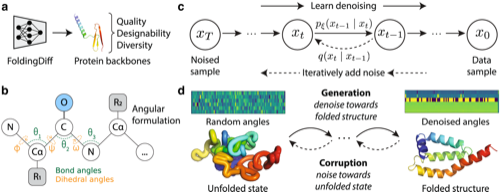
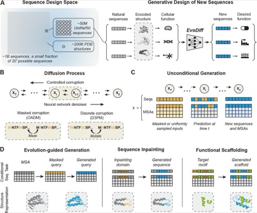

Publications
Selected peer-reviewed articles and preprints. See Google Scholar for the complete and most current list.
Underlined denotes first-author work · * equal contribution · † corresponding author.
Generative AI for protein design
-

-

-

-

Updated with experimental validation of generated proteins.
Benchmarks and evaluation for protein ML
-
 Oral presentation at ICML 2026 (168 of 23,918 submissions, ~top 3%).
Oral presentation at ICML 2026 (168 of 23,918 submissions, ~top 3%). -
-